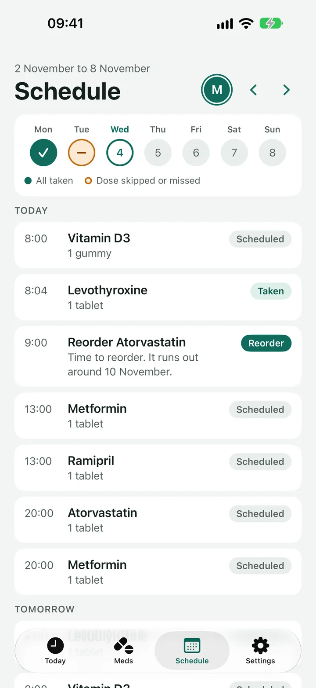
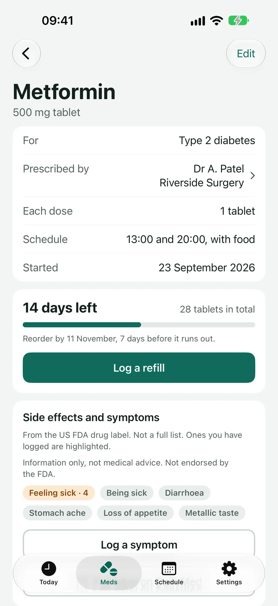
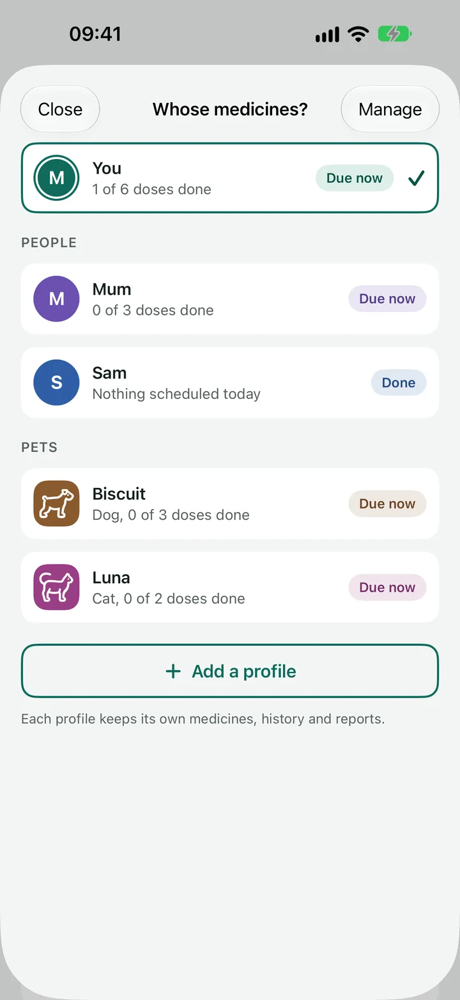
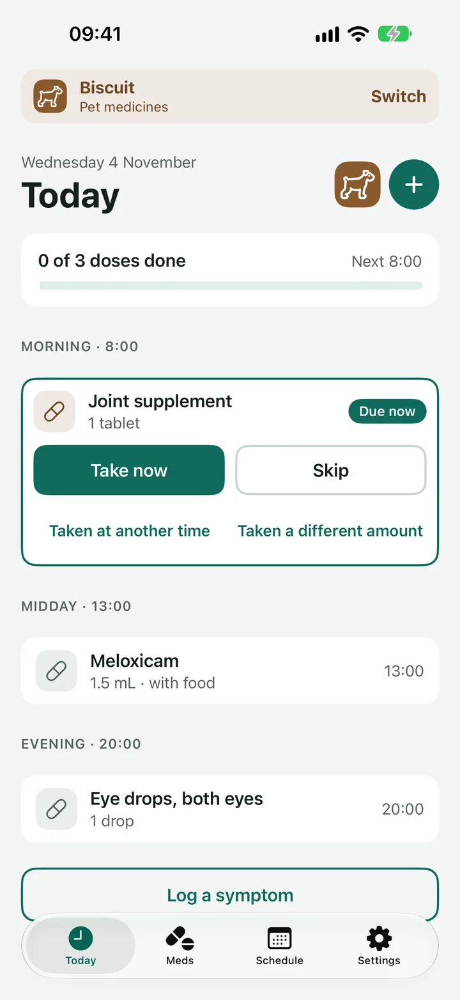
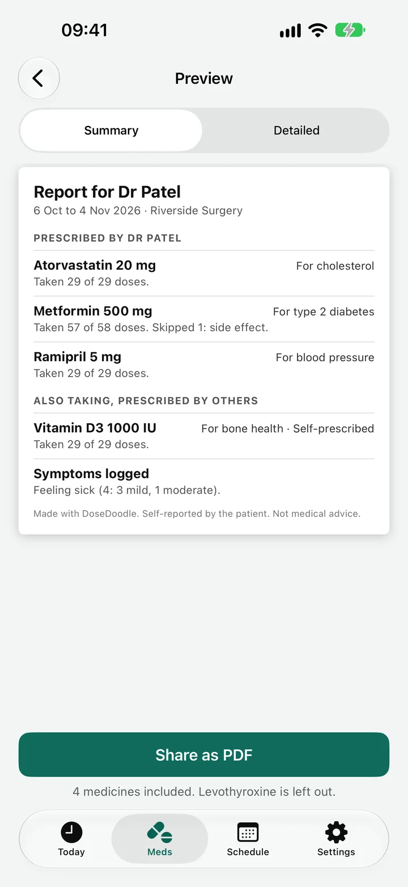
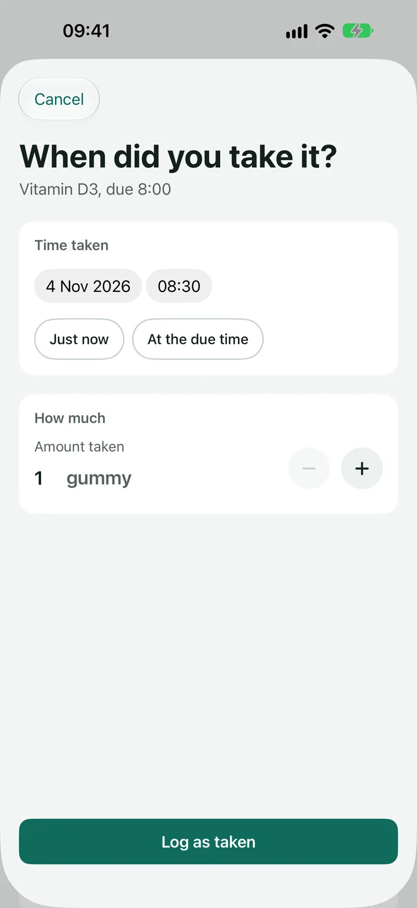

Reminders
A calm view of your day.
Today lists every dose in time order. Tap once to take it. If you miss one, DoseDoodle follows up, so a busy morning doesn't turn into a missed dose.
- Take, skip or snooze for 15 minutes, straight from the reminder.
- Took it early, or a different amount? Say so, and the reminders for that dose stop.
- Note a symptom beside your doses, so the pattern is easy to see later.
Schedule
The whole week, at a glance.
A week strip shows which days everything was taken and which doses were skipped or missed. Below it, the day's doses are listed in time order, with a nudge when it's time to reorder.
- Each medicine on the schedule that suits it: daily, every few days, on and off cycles, or as needed.
- Pause a medicine for a few days from the Skip screen.

Medicines
Know before you run out.
Each medicine keeps its dose, schedule and supply. DoseDoodle counts the days left and tells you when to reorder.
- Add a medicine by pointing the camera at the box, from a photo, or by hand.
- Tap Look up to see the common side effects from the US FDA drug label, or type your own.
- Keep the doctor's name, what it is for and an optional picture of the box.

Profiles
One app for the whole family. Pets too.
Look after a parent, a partner, a child or the dog. Each profile has its own medicines, history, doctors and reports, and a reminder always says whose medicines it is for.
- Switch profiles in one tap from the top of Today.
- A bar across the screen shows whose medicines you are looking at.
- Pet profiles use the right words, and reports that suit a vet.


Reports
Ready for your next appointment.
Make a clear report for your doctor, pharmacist or vet. It shows which doses were taken, which were skipped and why, and the symptoms noted.
- Share it as a PDF, or export a CSV file for a spreadsheet.
- Choose the medicines and the period, from the last 7 days to chosen dates.
- Made on your iPhone and sent only where you choose.

Real life
Life isn't always on schedule.
A dose an hour late? An extra one? Log it at the time and amount it really happened. The history, the report and the supply count all use what was actually taken.
- Log a dose that isn't on the schedule with the + on Today.
- Step the amount up or down, even for something like 0.1 mL.

Everything around it, too.
Widgets
Home Screen and Lock Screen widgets show your doses done and the next one, with a Taken button when a dose is due.
Siri and Shortcuts
Say "Log my medicines" or ask "What's next".
App lock
Ask for Face ID when the app opens, and after the time away that you choose.
Private reminders
Hide medicine names in reminders and widgets, so a glance at your phone says nothing.
Calendar
If you like, add the next two weeks of doses to a calendar on your iPhone. It is off until you turn it on.
Light and Dark
Follows your iPhone's appearance and its text size.
Your records stay on your iPhone.
Health information is personal. DoseDoodle has no accounts and no servers of its own, so there is nothing for anyone to collect.
Support
Questions, problems or ideas? Email DoseDoodleSupport@gmail.com. Please say which iPhone and iOS version you use, and what you were doing when it went wrong.
Common questions
I'm not getting reminders.
Open the iPhone Settings app, choose DoseDoodle, then Notifications, and make sure Allow Notifications is on. If you use a Focus, allow DoseDoodle in that Focus, or turn on Time Sensitive notifications so dose reminders can come through.
Can I keep track of someone else's medicines, or my pet's?
Yes. Tap the profile icon at the top of the Today screen, then Add a profile, and choose Another person or A pet. Each profile keeps its own medicines, history and reports, and reminders say whose medicines they are for. A bar at the top of the screen shows whose medicines you are looking at whenever it is not your own.
Where is my data stored?
On your iPhone only. DoseDoodle has no accounts and no servers of its own. If you delete the app, its records are deleted with it, unless you have exported them. Your own iPhone backup may include them.
What does "Look up" send over the internet?
Only the medicine name, and only when you tap Look up to find the common side effects on the US FDA's public drug label data. Nothing else leaves your phone. See the privacy policy for details.
How do I get the records to a doctor or vet?
Use Doctor report in the app. Choose the medicines and the period, then share the PDF, or export a CSV file.
A dose was taken early or at a different time.
On the dose's card choose "Taken at another time", and the reminders for that dose will stop. If the amount was different, choose "Taken a different amount".
How do I add the widgets?
On the Home Screen, touch and hold an empty spot, tap the + button, and search for DoseDoodle. For the Lock Screen, touch and hold the Lock Screen, choose Customise, and add a DoseDoodle widget. The widgets show the owner profile's doses.
Can I lock the app with Face ID?
Yes. In DoseDoodle, open Settings, then App lock, and turn on Require Face ID. You choose how long the app can be left before it locks again.
Can I stop names showing on my Lock Screen?
Yes. Turn on Hide medicine names in Settings. Reminders and widgets then leave the names out.
Can I see my doses in my calendar?
Yes. In Settings, choose Calendar to add the next two weeks of doses to a calendar on your iPhone. It is off until you turn it on.
Still stuck?
Write to DoseDoodleSupport@gmail.com and I'll help.
Say thanks
DoseDoodle is free. If it has helped and you'd like to say thanks, you can buy me a coffee. It goes towards the costs of keeping the app going.
DoseDoodle is a reminder and record-keeping tool. It does not give medical advice. Always follow what the doctor, pharmacist or vet has said, and read the leaflet that comes with the medicine. Side effect information comes from US FDA drug labels, is not a full list and is not endorsed by the FDA.